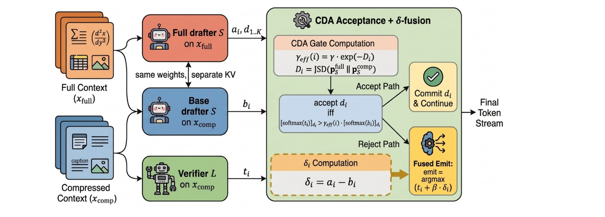
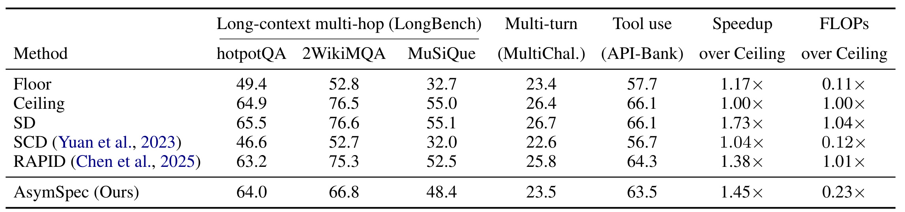
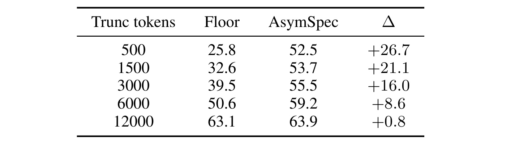
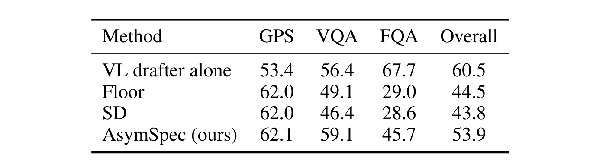
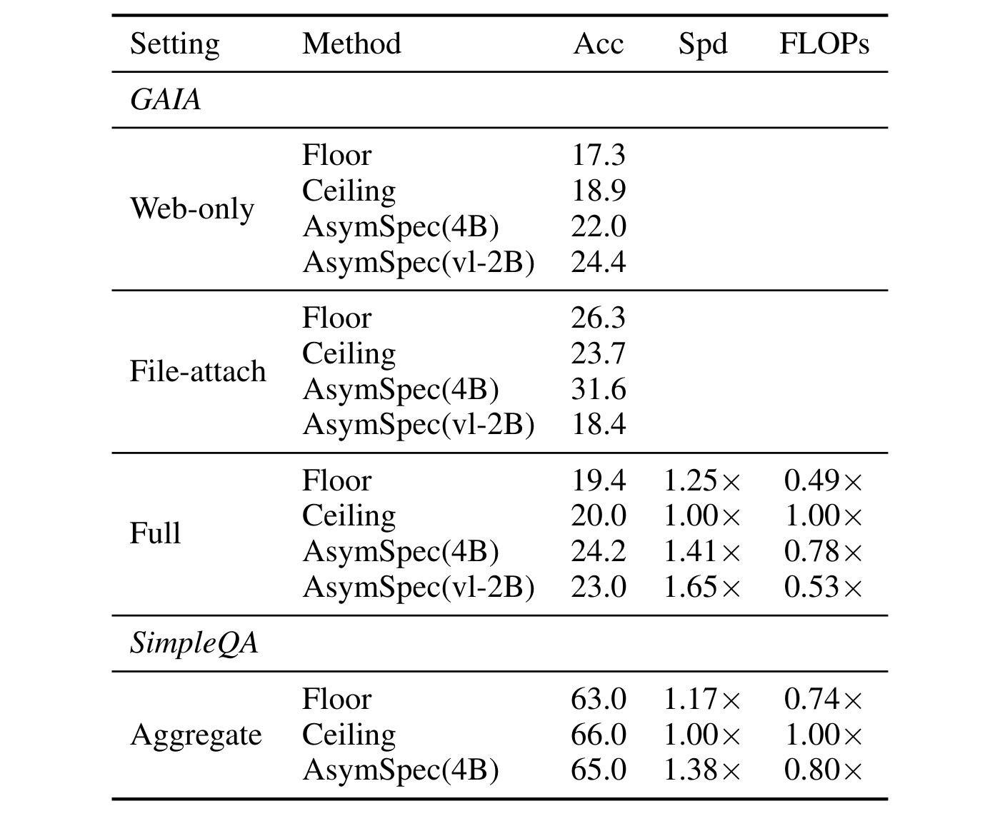
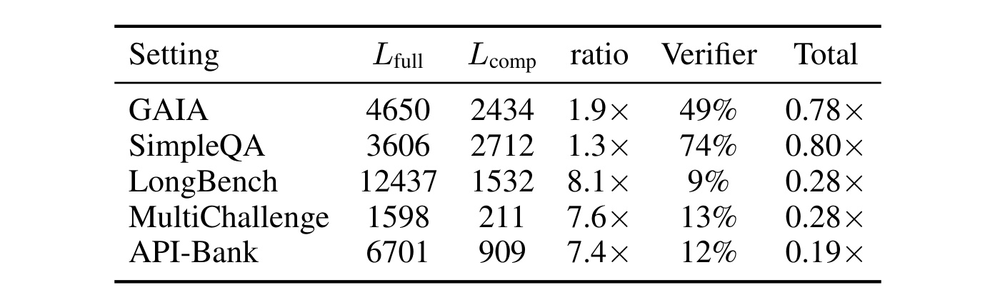
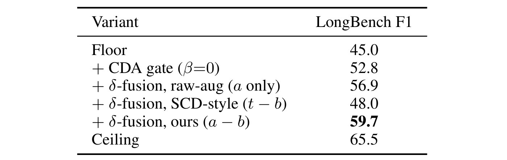
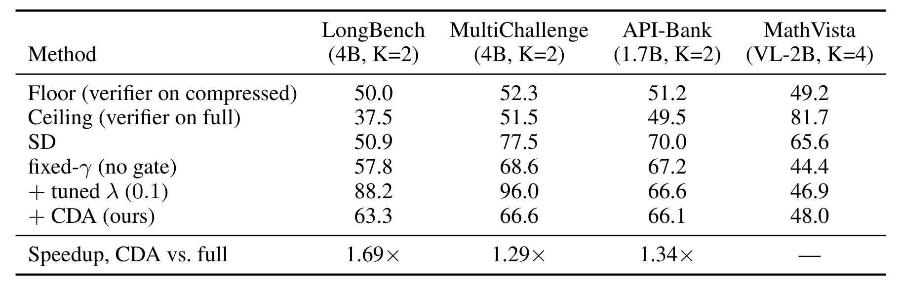
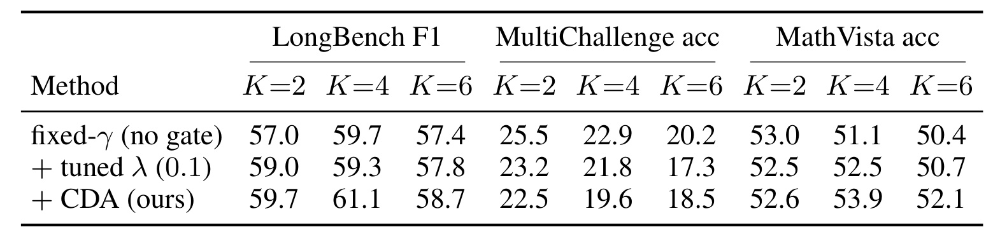

AsymSpec：面向智能体大模型的上下文非对称投机解码
AsymSpec 由华为技术有限公司 Sheng Liang 等人提出，合作机构包括中国科学技术大学。论文于 2026 年 8 月 26 日公开，作者在 arXiv 备注中标注为 EMNLP 2026 Main Conference；这一会议状态是作者提供的信息，不等同于本轮对会议录的独立核验。论文入口为 AsymSpec: Context-Asymmetric Speculative Decoding for Agentic LLMs。本轮没有核验到独立的官方代码仓库或项目页，因此下面对实现的讨论以论文给出的算法、vLLM 改造说明和实验口径为准。
智能体在检索、工具调用、多轮交互和多模态处理中不断累积上下文；压缩这些输入能降低大模型验证器的时延，却会丢失完成任务所需的细节。标准投机解码又要求草稿模型与验证器读取同一上下文，因此它只能加速一个已经被压缩、已经受损的目标分布，不能补回被压缩掉的信息。
1. 背景和问题
长上下文推理的成本问题在 agent 场景里比单轮问答更尖锐。一次普通问答只需做一轮 prefill 和后续 decoding，而 ReAct 类智能体会把检索结果、网页正文、工具返回、历史思考和先前动作持续拼回下一轮提示词；每完成一步，下一次大模型调用都可能在更长的上下文上重新计算。随着轮数增加，决定时延的往往不再是输出 token 数，而是大 verifier 对累积上下文的反复读取。工程系统因此会采用截断、摘要、LLMLingua-2、只保留 API 签名、图像转 caption 等手段，把原输入 \(x_{\mathrm{full}}\) 压成 \(x_{\mathrm{comp}}\)。这些方案确实缩短了 verifier 的 prefill，却把多跳证据、参数格式、历史约束或像素级线索一并删掉，形成“全上下文高准确但昂贵”和“压缩上下文便宜但失真”的二选一。
标准 speculative decoding 解决的是另一条轴：小 drafter 先产生若干候选 token，大 verifier 一次并行打分并用拒绝采样校验，从而减少 verifier 的自回归步数。其关键性质是 drafter 和 verifier 面对相同输入，验证过程不改变目标模型分布。EAGLE、Medusa、TriForce、MagicDec 等工作改善了草稿质量、树结构或长上下文缓存，但仍把上下文视图保持为对称。若两者都读完整上下文，系统仍支付大 verifier 的长 prefill；若两者都读压缩上下文，投机过程再快也只是在复现压缩 verifier 的输出，缺失证据没有任何入口回到生成分布。SCD 虽然将专家与业余模型 logits 做对比，却仍在共享上下文上隔离模型容量差，而不是隔离压缩前后的信息差。
AsymSpec 的切入点是 verifier 与 drafter 的规模不对称。论文的主配置用 Qwen3-32B 作为 verifier，用 Qwen3-4B 或更小模型作为 drafter。大模型每次读取数千到上万 token 的成本占主导，而小模型多做一次完整上下文 forward，仍可能远小于 32B verifier 被省下的 prefill。因此可以让 verifier 严格只看压缩视图，drafter 同时看完整视图与压缩视图：系统保留压缩 verifier 的主要成本优势，再让小模型把“完整上下文使下一 token 偏好发生了什么变化”提取出来。这个目标不同于 RAPID；RAPID 让短上下文 drafter 服务于全上下文 verifier，优先保留大模型目标分布，计算仍接近全上下文。AsymSpec 则把昂贵模型锁在压缩侧，主动接受分布被引导，以换取新的准确率—计算量工作点。
这种设计也重新界定了“投机解码”的含义。AsymSpec 保留候选生成、并行验证、接受多个草稿以及首个拒绝点处理等结构，但论文明确说明：它不是相对于 full-context verifier 目标分布的无损采样。verifier 根本没有读取 \(x_{\mathrm{full}}\)，拒绝时还会将上下文差分注入其 logits；因此结果是面向贪心解码的 speculative-style steering。这个边界很重要：摘要中的“恢复约 90% full-context accuracy”不能理解成精确复现完整上下文大模型，更不能理解成对任意随机采样温度都维持分布等价。论文只评估 \(\tau=0\)，理由是 agent 工具调用与 JSON 输出强调确定性和可解析性。
论文还提出一个可检验的适用性判断：AsymSpec 的收益应该随压缩造成的信息损失变大而上升。如果压缩近乎无损，完整/压缩视图下 drafter 的分布应接近，方法不应凭空制造显著增益；如果多跳文档、完整 API 规范或图像线索被删掉，跨上下文差分才有足够信号。这个判断让方法不只是一个“多跑小模型”的技巧，而是可以由 Floor–Ceiling gap 和压缩比例预先判断是否值得部署的系统策略。后面的 LongBench 截断扫描和 MultiChallenge 近无损负结果，正是对这一假设的直接检验。
与推荐系统的联系也不止于类比。长期用户行为、会话历史、候选内容、检索证据和工具返回，同样会在生成式推荐或推荐 agent 中构成长上下文。线上常见做法是只给大模型近期行为、摘要兴趣或少量候选，而把完整历史留在低成本特征或小模型侧。AsymSpec 给出一种 token 级协同范式：小模型读取更丰富的个性化或检索证据，大模型保持紧凑上下文，通过输出分布差传递增量信息。不过论文并未在推荐数据、排序指标或线上服务上实验，因而这种迁移目前只是机制层面的启发，不能写成已验证的推荐效果。
2. 方法
2.1 非对称上下文的服务目标
论文将大 verifier 记为 \(L\)，轻量 drafter 记为 \(S\)，且 \(|S|\ll|L|\)。同一任务提供完整提示 \(x_{\mathrm{full}}\)，黑盒压缩器产生 \(x_{\mathrm{comp}}\)，后者长度显著更短。两个直接基线分别是 \(L(\cdot\mid x_{\mathrm{full}})\) 的高准确高时延 Ceiling，以及 \(L(\cdot\mid x_{\mathrm{comp}})\) 的低成本低准确 Floor。AsymSpec 不让 verifier 在两种视图之间切换，而是始终把它固定在 \(x_{\mathrm{comp}}\)；只有小 drafter 额外读取 \(x_{\mathrm{full}}\)。 这样做把主要 prefill 节省锁定下来，同时给被丢弃信息留出一个低成本通道。
每个 speculation step 实际包含三路 forward。第一路由 \(S(x_{\mathrm{full}})\) 自回归提出 \(K\) 个候选 \(d_{1:K}\)，并得到相应位置及额外一位的 logits \(a_{1:K+1}\)；第二路用同一个 \(S\) 在 \(x_{\mathrm{comp}}\) 与候选序列上计算 \(b_{1:K+1}\)；第三路由 \(L(x_{\mathrm{comp}})\) 一次并行给所有草稿位置打分，得到 \(t_{1:K+1}\)。完整与压缩 drafter 共享权重，但需要各自的 KV cache。它不是训练一个新模型，而是重新分配推理时上下文和缓存；训练阶段没有新增 loss，推理阶段新增的是小模型的压缩视图 pass 与逐 token 的差分、散度和门控计算。
2.2 同模型跨上下文 delta 融合
AsymSpec 的核心信号不是“大模型减小模型”，而是同一个 drafter 在两种上下文下的差。对第 \(i\) 个位置，论文定义：
符号解释：\(a_i\in\mathbb{R}^{|\mathcal V|}\) 是 drafter 读取完整上下文后的 logits，\(b_i\in\mathbb{R}^{|\mathcal V|}\) 是相同权重 drafter 读取压缩上下文后的 logits，\(\mathcal V\) 是共享输出词表，\(\delta_i\) 则是逐词表维度的上下文增益。因为模型容量、词频偏好和解码习惯在两次 forward 中相同，相减会抵消较多上下文无关偏置，突出“多看到的证据把哪些 token 推高或压低”。这也是它与 SCD 的本质差别：SCD 的差分混合了 expert/amateur 容量差，AsymSpec 尽量把差分限定为 context shift。
当某个候选在 verifier 处首次被拒绝时，系统不直接发射压缩 verifier 的 argmax，而是计算：
符号解释：\(t_i(v)\) 表示压缩上下文 verifier 对词 \(v\) 的 logit，\(\beta\in[0,1]\) 是差分融合强度，\(d'_i\) 是拒绝位置最终发射的 token。直觉上，\(t_i\) 保留 32B 模型的推理和语言能力，\(\delta_i\) 只把完整上下文相对压缩上下文新增的偏好叠回去。论文默认 \(\beta=1\)，并在附录看到 \(\beta=1\) 到 2 的 LongBench F1 近似平坦，而 0.5 较弱。该融合不是恢复一个可证明等价的 full-context verifier 分布；若小 drafter 没能力读出关键证据，或其 context shift 与大模型不一致，\(\delta_i\) 可能不足甚至误导。
2.3 CDA 接受门与拒绝发射
固定接受阈值在两种上下文差异很大时容易把有价值的草稿过度拒绝。AsymSpec 先度量完整/压缩 drafter 分布的 Jensen–Shannon divergence，再按位置放松阈值：
符号解释：\(D_i\) 衡量相同 drafter 在第 \(i\) 个位置因上下文变化产生的分布分歧；它不是模型容量差。JSD 对两个离散分布有严格上界 \(\ln 2\)，即使某些 token 概率接近零也不会像无界 KL 那样让门控尺度失控。论文把较大的 \(D_i\) 解释为压缩视图可能低估完整上下文草稿的信号，因此应降低接受门槛，而不是在最需要完整证据的位置把候选全部拒绝。
符号解释：\(\gamma\) 是标准投机验证的基础阈值，主实验取 0.5；\(\gamma_{\mathrm{eff}}(i)\) 是位置相关阈值。由于 \(0\le D_i\le\ln2\)，有效阈值自动落在 \([\gamma/2,\gamma]\)，无需截断或按数据集调散度系数。附录从三个要求推导指数形式：零分歧时回到基础阈值；阈值随分歧连续且不增；独立上下文变化的影响按乘法组合。一般形式为：
符号解释：\(T>0\) 是一般指数解中的尺度，JSD 的通用上界让论文把 \(T\) 固定为 1，从而得到上式的无额外数据集超参数版本。这一“parameter-free”只指散度尺度不需手调，基础 speculation threshold \(\gamma\)、深度 \(K\) 和融合权重 \(\beta\) 仍是系统配置。
候选 \(d_i\) 的实际接受条件是：
符号解释：左侧是 verifier 对候选 \(d_i\) 的概率，右侧是压缩视图 drafter 对同一候选的概率乘以自适应阈值。满足不等式时直接提交 \(d_i\) 并继续检查后续候选；第一次不满足时停止本轮，使用 \(t_i+\beta\delta_i\) 的 argmax 发射。若 \(K\) 个草稿全部通过，则额外提交 verifier 在 \(K+1\) 位置的 argmax。于是 CDA 负责“不要过早拒绝上下文敏感草稿”，delta 融合负责“拒绝发生时仍把完整视图信息送进最终 token”，二者作用位置不同。

Figure 1 把三次 forward 与两条控制路径放在同一对象里。左侧橙色完整上下文只进入 Full drafter，蓝色压缩上下文同时进入 Base drafter 与大 verifier；上下两个 drafter 标注 same weights、separate KV，说明差分来自上下文而不是参数，但缓存不能混用。三路输出 \(a_i,b_i,t_i\) 在绿色区域汇合：\(a_i\) 与 \(b_i\) 既用于 JSD 门控，也在拒绝时形成 \(\delta_i\)；\(t_i\) 则提供大模型的最终判断。接受路径直接提交草稿，保留 speculative decoding 的多 token 摊销；拒绝路径通过 fused emit 选择 \(t_i+\beta\delta_i\) 的 argmax。值得注意的是，图中只有 drafter 消费 \(x_{\mathrm{full}}\)，因此准确率恢复必须经过小模型的 logits 通道，verifier 无法重新读取被压缩掉的原始证据。这解释了方法为何能省大头计算，也解释了其恢复上限为何同时受压缩视图和 drafter 容量约束。
2.4 跨模态扩展与实现代价
跨模态版本利用的是输出侧兼容，而不是输入侧同构。视觉语言 drafter 可以把原图作为 \(x_{\mathrm{full}}\)，文本 verifier 只接收 caption 与 EasyOCR 文字作为 \(x_{\mathrm{comp}}\)；只要二者共享输出 token vocabulary，\(a_i,b_i,t_i\)、\(\delta_i\) 与 CDA 都仍定义在同一词表空间。视觉塔每个请求运行一次，图像 embedding 缓存在 drafter 的 KV 侧，因此输出较长时，视觉编码的单 token 摊销成本下降。这里没有新增训练目标，但部署不是把两个现成模型简单拼接：论文对 vLLM 0.19.0 做了五处补丁，包括像素输入缓存、视觉 embedding 合并、Qwen3-VL 的三维 M-RoPE 位置、将合并 embedding 真正路由到 speculative drafter prefill，以及放宽跨模态长度关系的替换门。
这组实现细节决定了实验可复现性。论文报告缺少关键 routing 补丁时，MathVista 准确率从有补丁的约 53% 降到 30.5%，说明“视觉 drafter 读原图”不能只在配置层声明；如果 speculative engine 实际仍把 image_pad 的文本 embedding 送给 drafter，delta 根本不包含像素信息。另一方面，这些补丁针对特定 vLLM 版本与 Qwen 变体，新版 API 已重构，迁移需要重新适配。跨模型族时还需显式词表与 logit 空间对齐；论文只在 109,566 个字符串完全一致 token 加配对特殊 token 的受限集合上做 Qwen–Llama 测试，不能据此假设任意 tokenizer 组合都能直接融合。
3. 实验结果
3.1 任务、模型与比较口径
论文把证据分成四个孤立 agent 能力和两个端到端 agent benchmark。LongBench 取 hotpotQA、2WikiMQA、MuSiQue 各 200 条，共 600 条多跳长上下文样本；MultiChallenge 有 271 条多轮指令跟随样本；API-Bank 使用 Method A 的 200 条单次 API 调用；MathVista 使用 587 条视觉数学问题。端到端部分在 smolagents 上运行 GAIA 全验证集 165 条，其中 web-only 127 条、文件附件 38 条，以及 SimpleQA 随机 500 条。指标分别是 F1、LLM judge accuracy、API-call exact match、MathVista accuracy、GAIA exact match 和官方 SimpleQA grader；这些指标口径不同，不能把不同列数值直接求一个没有语义的总平均。
主文本配置用 Qwen3-32B verifier、Qwen3-4B drafter，API-Bank 容量扫描显示 1.7B 是更合适的主配置；MathVista 使用 Qwen3-VL-2B drafter。解码均为 greedy，thinking mode 关闭，文本任务默认 \(K=2,\beta=1,\gamma=0.5\)。Floor 是 verifier 只读压缩输入，Ceiling 是 verifier 读完整输入；SD 在共享完整上下文上衡量投机加速，SCD 在共享压缩上下文上做容量对比，RAPID 则让短 drafter 配全上下文 verifier。效率有两个维度：Speedup 是单加速器真实 tokens/s 相对 full-context Ceiling 的比值，FLOPs 是按模型参数量与实测 context token 比例估算的 per-step prefill 计算。前者受内存带宽、接受率和框架开销影响，后者更接近计算/能耗账，二者不能互换。
3.2 文本 agent 能力与压缩严重度

Table 1 的关键不是“AsymSpec 每列都最好”，而是它到达了对称方法不容易同时到达的成本区间。LongBench hotpotQA 上，Floor 为 49.4、Ceiling 为 64.9，AsymSpec 达 64.0，恢复了约 94% 的 Floor–Ceiling 差距；2WikiMQA 从 52.8 提到 66.8，相对 76.5 Ceiling 仍有 9.7 点残差；MuSiQue 从 32.7 提到 48.4，距 55.0 仍差 6.6 点。API-Bank 从 57.7 提到 63.5，接近 66.1。对应的平均 speedup 为 1.45×，FLOPs 为 Ceiling 的 0.23×。SD 的准确率等同 full-context Ceiling 且 speedup 1.73×，但 FLOPs 仍是 1.04×；RAPID 准确率更接近 Ceiling，却消耗 1.01× FLOPs。AsymSpec 的价值因此是把大 verifier 压缩带来的计算节省与明显的准确率恢复结合，而不是在纯速度或纯准确率单轴上绝对领先。
负结果同样重要。MultiChallenge 的 Floor 23.4、Ceiling 26.4，原本只有 3 点 headroom，AsymSpec 为 23.5，几乎没有恢复；SCD 在 LongBench 与 API-Bank 多数低于 Floor，说明共享压缩上下文上的容量差分不能自动补回缺失文档或 API 规范。论文摘要所谓“约 90% full-context accuracy”是相对于完整上下文绝对表现的概括，而 caption 给出的 59%–94% 是多跳 QA 与工具使用上的 Floor–Ceiling gap closure，两者分母不同。部署评估应先看压缩本身造成多少损失，再看系统愿意为恢复其中一部分支付多少小模型计算，不能只引用单个百分比。

Table 2 给出了最能支撑方法因果叙事的连续证据。verifier 只保留 500 token 时，Floor 仅 25.8，而 AsymSpec 为 52.5，提升 26.7；预算升至 1500、3000、6000 token，增益依次收窄为 21.1、16.0、8.6；当压缩视图已有 12000 token，Floor 63.1 已接近 full-context 的 65.5，AsymSpec 只有 63.9，增益 0.8。这个单调趋势符合 delta 的设计：压缩越严重，完整/压缩 drafter 分布差越大，可注入的上下文增益越多；压缩越轻，CDA 与 delta 自然接近无动作。论文还报告不同预算的接受率维持约 0.851–0.855，说明增益变化并非门控突然失稳。不过该扫描只在 LongBench 与一种截断轴上完成，仍不能替代不同领域压缩器、不同输出长度和在线流量的联合压力测试。
3.3 跨模态推理

Table 3 中没有 text-only full-context Ceiling，因为 Qwen3-32B verifier 不能直接读原图；作者用 Qwen3-VL-2B drafter 单独读图的 60.5 作为参考。文本 verifier 只读 Bard caption 与 OCR 的 Floor 为 44.5，对称 SD 为 43.8，AsymSpec 达 53.9，总体比 SD 高 10.1 点。子任务差异揭示信息通道的作用：GPS 上 Floor 已有 62.0，AsymSpec 62.1，caption/OCR 基本保住几何解题所需结构；VQA 从 49.1 提到 59.1，FQA 从 29.0 提到 45.7，说明原图里的视觉定位和图表细节可以由 VL drafter 的输出偏好传给文本 verifier。AsymSpec 仍低于 VL drafter-alone 参考值，表明 logits steering 不能让文本 verifier 真正获得像素表征。更应谨慎的是，VL drafter-alone 并非所有子任务的理论上界，例如 GPS 上文本 Floor 反而更高；它只是该实验条件下最接近的跨模态参考。
论文把这个结果解读为对既有文本 verifier 的能力扩展：无需把 32B 模型整体替换成视觉语言大模型，就能让小 VL drafter 处理原图。这个工程判断要与补丁成本一起看。视觉塔虽然每请求只运行一次，但 MathVista 的真实吞吐仍被视觉前向拖慢；没有 embedding 路由补丁时性能大幅下降。对于推荐系统，多模态内容理解也可能采用类似路径——小 VLM 读视频帧、图片或商品详情，大语言模型只看压缩文本——但要先验证共享词表和 context shift 是否真能传递细粒度商品属性，而不是把 MathVista 的 VQA/FQA 提升直接外推为 CTR 或排序收益。
3.4 端到端 agent loop 与计算账

Table 4 把 AsymSpec 放进会持续重压缩上下文的实际循环。GAIA aggregate 中，Floor 为 19.4、可用 Ceiling 参考为 20.0，AsymSpec(4B) 达 24.2，同时有 1.41× speedup 与 0.78× FLOPs；换成 VL-2B drafter 后总体 23.0、1.65×、0.53×。Web-only 子集上，4B 与 VL-2B 分别为 22.0、24.4，高于 Floor 17.3 与 Ceiling 18.9；文件附件子集上，4B 达 31.6，但 VL-2B 只有 18.4，低于 Floor 26.3。这里的“Ceiling”按子集采用可获得的参考：web 是 Qwen3-32B full，文件是 full-file drafter-alone，并非一个统一模型的严格上界，所以 AsymSpec 超过该列不能被解释成超过真正 full-context 32B。结果更适合说明 rich drafter 线索与 compressed verifier 的组合可能优于当前可用单侧参考。
文件子集的反转也暴露 drafter 容量边界：2B 视觉模型即使拿到附件或图像，文本推理能力仍可能不足；4B 文本 drafter 读取完整抽取文本时反而更强。SimpleQA 的上下文压缩仅约 1.33×，Floor 63.0、Ceiling 66.0，AsymSpec 65.0，准确率恢复存在但计算只降到 0.80×。这与 LongBench 极端压缩场景形成对照：agent loop 并不会自动保证收益，压缩 headroom 与 drafter 是否获得真正新增信息仍是前提。论文报告 GAIA 在线重压缩时接受率约 0.90，说明多轮动态摘要没有把 verifier–drafter 一致性破坏到无法投机，但网络 I/O、搜索工具和网页访问耗时没有计入表中的 LLM-only speedup。

Table 5 把成本差异解释得更具体。LongBench 的 full/comp 长度为 12437/1532，约 8.1× 压缩，32B verifier prefill 只剩 full 基线的 9%，加上两次 drafter forward 后总计 0.28×；MultiChallenge 7.6× 压缩，总计也是 0.28×；API-Bank 6701 token 的完整 API 文档压成 909 token 签名，verifier 占 12%，总计最低至 0.19×。相比之下，GAIA 每轮 4650/2434 仅 1.9×，总计 0.78×；SimpleQA 3606/2712 仅 1.3×，总计 0.80×。这证明摘要中的 0.2–0.3× 只适用于三个孤立文本能力，不能套到所有端到端 benchmark。它也说明两次 drafter pass 不是“免费”：压缩轻时，小模型增量成本会成为总账中显著部分，系统应依据实测长度和模型规模决定是否启用。
FLOPs 估算采用参数量乘 token ratio 的 per-step prefill 约定，适合比较计算量，却不包含完整硬件利用率、KV cache 带宽、跨设备通信或工具等待。论文称 30B+ 解码常受内存带宽限制，因此 0.19× 计算不等于五倍吞吐；同时对两次 drafter prefill 的保守计数也可能高估稳态 decoding 成本，因为实现会维护分离 KV cache，把压缩视图 forward 降到每步 \(O(K)\)。真正上线时应记录每轮 full/comp token、视觉塔耗时、接受长度、batch size 和端到端 p95，而不是从表中挑一个最小 FLOPs 数字作为服务承诺。
3.5 机制消融与上下文信号

Table 6 在 LongBench 上把两个组件拆开。压缩 Floor 为 45.0；关闭融合、只保留 CDA（\(\beta=0\)）可到 52.8，说明在上下文分歧位置适当放宽阈值，本身就能让更多 full-context drafter 候选通过。用完整 drafter 的原始 logits \(a\) 直接融合达到 56.9，仍比完整方案 59.7 低 2.8；改用 SCD 风格的 \(t-b\) 只有 48.0，比完整方案低 11.7。相同 drafter 权重下的 \(a-b\) 最优，支持“抵消模型自身偏好、留下上下文变化”的解释。Ceiling 65.5 仍比 59.7 高，说明门控与差分都不能替代 verifier 对完整证据的直接 attention。
这个消融还表明 CDA 与 delta 并非重复模块。CDA 改的是候选接受边界，影响能够一次提交多少草稿；delta 改的是首个拒绝位置发射哪个 token，负责把被压缩的格式或事实偏好重新放进输出。论文的 API-Bank 个案中，压缩 verifier 只看到函数签名，会漏掉时间的秒字段并把 health_data 写成自由文本；full drafter 看到完整规范后，某些 token 经 CDA 接受，另一些在拒绝点经 delta 融合改成带秒的时间和字典列表结构。这个案例与 exact-match 指标的提升相符，但只有一个实例，不能单独证明普遍的 schema 可靠性；仍需按错误类型统计非法 JSON、参数缺失和错误工具选择。
附录鲁棒性给出几个必要边界。gamma 在 0.4–0.7 内没有明显断崖；beta 在 1.0–2.0 基本平坦；Summary、LLMLingua-2、truncate-1500 与 question-only 四种压缩视图上，AsymSpec 恢复约 63%–70% 的 Floor–Ceiling gap，而 SCD 均低于 Floor。drafter 容量方面，0.6B 往往无法抽取稳定 context gain，1.7B 是实用下限，4B 在 LongBench 更强；API-Bank 却出现 1.7B K=2 的甜点和 4B K=4 的例外。这些结果说明方法对参数不算脆弱，但“更大 drafter 必然更好”并不成立，容量、任务格式和 speculation depth 存在耦合。
3.6 真实吞吐与 speculation depth

Table 11 展示 wall-clock tokens/s：CDA 在 LongBench、MultiChallenge、API-Bank 上相对 full-context Ceiling 分别为 1.69×、1.29×、1.34×；MathVista 因没有 text-only Ceiling 不报告相同比值。值得警惕的是 tuned-\(\lambda\) 行在 LongBench 和 MultiChallenge 分别达到 88.2、96.0 tokens/s，明显高于 CDA 的 63.3、66.6，而作者将差距归因于 eager 模式单次运行方差，并强调 CDA 比 tuned 版本只多一次逐 token 标量除法。这个解释有机制合理性，却也说明吞吐实验统计不足：表中没有置信区间、重复次数、batch 配置或 p95。因而摘要的 1.3–1.7× 可作为该硬件设置下的观察范围，不能当作换模型、换 GPU、启用 graph capture 后的确定保证。
论文用 Table 13 补充解释接受动力学：默认配置 AR 在 0.78–0.92，\(K=2\) 时 MAL 约 2.6–2.8 个位置，GAIA 在线重压缩仍为 0.90/2.81。接受率不低，说明真实加速与 FLOPs 降幅的差主要来自 30B+ 解码的内存带宽瓶颈，而不是草稿大量失败。跨模态还要支付一次视觉塔 forward，虽能被长输出摊薄，却会让短回答收益更有限。复现时至少需要同一 accelerator、相同 eager/graph 状态、相同 batch 与输出长度，分别测 prefill、decode、视觉前向和工具时间。

Table 12 说明 speculation depth 不是越深越好。LongBench 的 CDA 从 K=2 的 59.7 升到 K=4 的 61.1，但 K=6 回落至 58.7；MultiChallenge 从 22.5 降至 19.6、18.5；MathVista 从 52.6 升至 K=4 的 53.9，再降到 52.1。fixed-gamma 与 tuned-\(\lambda\) 在 MultiChallenge 上也随 K 增大下降，说明这不是 CDA 特有故障，而可能由长草稿中的误差累积、judge 波动与近无损任务很小的提升空间共同造成。作者因此把 K=2 设为文本默认，只有 MathVista 使用 K=4。这个选择比只追 LongBench 峰值更稳健，也提醒部署应把 K 视作能力和吞吐的共同旋钮，按任务族验证，而不是全局固定到最大接受长度。
跨模型族实验进一步检验了 delta 的可迁移性。Llama-3B→Llama-70B 从 Floor 50.6 提到 54.2，恢复 23%；Qwen-4B→Llama-70B 提到 58.4，恢复 50%；Llama-3B→Qwen-32B 只从 45.0 到 47.1，恢复 10%；同族 Qwen-4B→Qwen-32B 达 59.7，恢复 72%。异构组合限制在 109,566 个字符串一致 token 与配对特殊 token 上，结果说明跨族可行但强弱差异大。若用于真正的本地—云端或推荐小模型—通用大模型协同，词表映射、特殊 token、拒绝位置的候选集合和 logit 标定都需要单独验收。
4. 总结
AsymSpec 的主要贡献，是把“谁读完整上下文”从投机解码的默认对称假设变成可调资源分配。大 verifier 固定读取压缩视图，小 drafter 同时读取完整和压缩视图；同模型 logits 差 \(\delta=a-b\) 提取 context gain，JSD 驱动的 CDA 在分歧大时放宽接受阈值，首个拒绝点再用 \(t+\beta\delta\) 发射。论文的证据链较完整：Table 1 展示准确率—FLOPs 新工作点，Table 2 证明收益随压缩损失缩小而消失，Table 6 验证同模型跨上下文差分优于容量差分，GAIA/SimpleQA 则说明它能进入动态重压缩循环。最可信的结论不是“总能恢复完整上下文”，而是：当大模型 prefill 昂贵、压缩确实删掉任务信号、且小 drafter 有能力读出这些信号时，非对称上下文能以较低计算追回一部分精度。
对工程落地，我会先把它视作有启停条件的 serving policy，而非默认解码器。可观测量至少包括 Floor–Ceiling gap、full/comp token ratio、\(D_i\) 分布、接受率、平均接受长度、delta 触发比例、结构化输出错误率和端到端 p95。推荐或搜索 agent 可以尝试让小模型接触完整用户历史、候选元数据或原始多模态内容，让大模型只读摘要；但应在排序/生成任务自身的离线与在线指标上验证，不应把 LongBench、API-Bank 或 MathVista 的数字直接迁移。
局限与风险至少有以下六项：
- 非无损分布。 verifier 未读完整上下文且拒绝时被 delta 引导，结果不等价于 full-context 目标分布；对开放式采样和安全策略的影响未知。
- 恢复上限受两侧约束。 压缩视图仍决定大模型可直接推理的信息，小 drafter 容量又决定能否提取 context gain；0.6B 和 GAIA 文件子集的结果已显示瓶颈。
- 接口要求高。 方法必须访问 verifier logits 并维护多套 KV cache，不适用于只返回文本的专有 API，也可能增加显存、调度与 batch 复杂度。
- 实现可移植性有限。 跨模态依赖 vLLM 0.19.0 的五处定制补丁，新版本与新 Qwen 结构需要重做；缺关键 routing 时 MathVista 明显失效。
- 评测外推有限。 论文主要用 Qwen 系列、六个 benchmark 和 greedy decoding，跨族只覆盖两组 tokenizer 对齐，未验证高温采样、广泛模型家族或真实生产流量。
- 吞吐统计不充分。 eager tokens/s 存在作者承认的运行方差，没有充分的重复统计、尾延迟与 graph-captured/batched 对照；0.2–0.3× FLOPs 不代表同倍率时延。
后续至少应跟进四件事。第一，复现 LongBench 的压缩预算扫描，同时记录逐位置 JSD、delta norm、接受/拒绝和错误类型，验证增益是否真集中在被删证据相关 token。第二，在相同硬件上补齐多次重复、batch size、CUDA graph、prefill/decode 分解与 p50/p95，确认 1.3–1.7× 是否稳定。第三，把随机采样纳入理论与实验，研究 CDA 在 \(\tau>0\) 时如何保持可控分布偏差，而不是仅凭 Gumbel-Softmax 设想。第四，在推荐 agent 上构造“完整长期行为给 drafter、摘要兴趣给 verifier”的受控实验，分别测 NDCG/Recall、解释一致性、隐私边界和在线成本；只有这些证据成立，机制启发才可能转化为推荐链路收益。